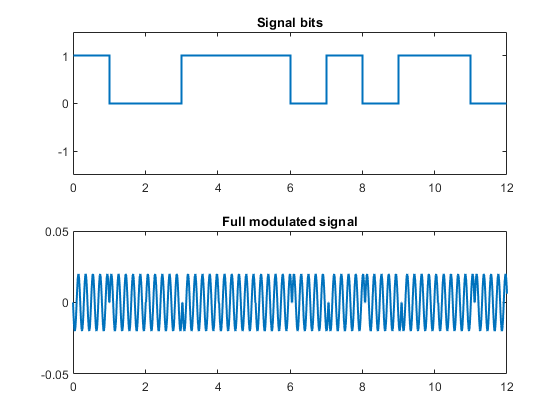

clc;clear;close all;
b = [1 0 0 1 1 1 0 1 0 1 1 0];
t = 0:0.01:1;
T = 0:0.01:length(b);
Signal = [];
Fc = 5;
for i=1:length(b)
subplot(2,1,1)
stairs(0:length(b), [b b(end)], 'LineWidth', 1.5)
title('Signal bits')
ylim([-1.5 1.5])
xlim([0 length(b)])
s= sin(2.*pi.*Fc.*t + b(i).*pi)./(sum(abs(sin(2.*pi.*Fc.*t + b(i).*pi)).^2));
subplot(2,1,2)
plot(t + (i-1), s, LineWidth=1.2)
title('Modulated bit')
xlim([0 length(b)])
ylim([-0.05 0.05])
drawnow
pause(0.5)
Signal = cat(2, Signal, s);
end
close
figure
subplot(2,1,1)
stairs(0:length(b), [b b(end)], 'LineWidth', 1.5)
title('Signal bits')
ylim([-1.5 1.5])
xlim([0 length(b)])
subplot(2,1,2)
plot(T, Signal(1:end-(length(b)-1)), 'LineWidth',1.5)
title('Full modulated signal')
xlim([0 length(b)])
ylim([-0.05 0.05])
